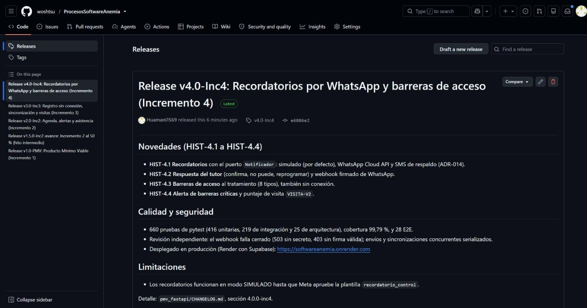

| Asignatura | Procesos de Software (ASUC01702) · 2026-20 |
| Docente | Guevara Jimenez, Jorge Alfredo |
| Proyecto | Sistema para la detección temprana y el seguimiento de la anemia infantil en zonas rurales de Junín (versión v4.0-Inc4) |
| Integrantes | Porras Veli, Ricardo (76659572) — Leader / Software Architect Auqui Huincho, Tania Tifani (75280128) — Backend, Data, Frontend & Mobile Huamani Rodriguez, Jean Piero (72156889) — Process Analyst & QA Lead |
| Repositorio | https://github.com/woshtsu/ProcesosSoftwareAnemia |
| Fecha de corte | 06/11/2026 |
Ver la página anterior. Roles en la gestión de la configuración: el Leader / Software Architect (Porras V.) evalúa y aprueba las solicitudes de cambio y es el propietario del repositorio; la desarrolladora (Auqui H.) implementa los cambios en ramas propias; el QA Lead (Huamani R.) registra las solicitudes, revisa las pull requests y publica las versiones.
«Anemia Junín» es una aplicación web progresiva con API FastAPI y arquitectura hexagonal que ayuda al personal de salud a registrar a los niños con anemia, programar sus controles, recibir alertas, trabajar sin conexión y registrar las barreras al tratamiento. Se construyó en cuatro incrementos (v1.0-PMV a v4.0-Inc4, 76 de 133 puntos de historia) y está desplegada en Render con Supabase. Según el plan, la semana 13 abre el Sprint 6, dedicado al Incremento 5 (modelo predictivo).
Objetivos de la gestión de configuración (SCM):
main) de la integración (develop) y del trabajo diario (feature/*), siguiendo GitFlow.El informe separa lo que ya existía en el repositorio de lo configurado el 06/11/2026 para este laboratorio, y señala lo que queda pendiente.
Se crearon las dos plantillas de la guía, con el texto normalizado. En la plantilla de PR, la DoD se adaptó a las herramientas del proyecto (Ruff, pytest --cov, pruebas de arquitectura y SonarCloud). También se crearon las etiquetas del flujo: change-request, pendiente-evaluacion, aprobado, rechazado e implementado.
| Archivo | Contenido | Estado |
|---|---|---|
.github/ISSUE_TEMPLATE/change_request.md | Solicitud de Cambio (RFC): módulo afectado, tipo de cambio, justificación, impacto en alcance, esfuerzo y riesgo, y criterios de aceptación Dado-Cuando-Entonces. Etiquetas automáticas: change-request y pendiente-evaluacion. | En la rama docs/s13-informe (PR #13). Se activan para todo el equipo al integrarse en main. |
.github/PULL_REQUEST_TEMPLATE.md | Resumen, Closes # y la DoD: compila sin advertencias (Ruff), cobertura ≥ 80 %, arquitectura hexagonal, evidencias funcionales y análisis estático (Ruff y SonarCloud). | |
CONTRIBUTING.md | Flujo del cambio, GitFlow, formato de commits tipo(ámbito): descripción, etiquetas, releases y protección de ramas. |
Las solicitudes se registraron el 06/11/2026 con la plantilla. Provienen de hallazgos reales: las observaciones del docente a S12, la autoevaluación CMMI (H2, H5 y H10), la auditoría OWASP Top 10:2025 (H-1 a H-3) y el plan del Sprint 6. Antes de esa fecha el proyecto no registraba los cambios en GitHub Issues: los gestionaba en coordinacion/TABLERO.md y en el plan de mejora.
| ID Issue | Título de la solicitud (RFC) | Origen / causa | Impacto estimado | Estado en GitHub | Aprobador / responsable |
|---|---|---|---|---|---|
| #14 | Corregir el informe integrador según las observaciones del docente a S12 | Observaciones del docente (ISO 690, GQM, CMMI) | 5 SP / Bajo | Abierto · pendiente-evaluacion; implementado en PR #13 | Porras V. (aprobador) · Huamani R. |
| #15 | Adoptar GitFlow, convención de commits y plantillas de cambio y de PR | CMMI H2 y H5; guía S13 | 3 SP / Bajo | Abierto · pendiente-evaluacion; implementado en PR #13 | Porras V. · Huamani R. |
| #16 | (duplicado de #15) | Registro duplicado por error | — | Cerrado como duplicado | Huamani R. |
| #17 | Regenerar los diagramas de arquitectura y de datos por ingeniería inversa (H10) | CMMI H10 | 2 SP / Bajo | Abierto · pendiente-evaluacion; implementado en PR #13 | Porras V. · Huamani R. |
| #18 | Roles en el JWT y políticas RLS por establecimiento | OWASP H-1 (A01, alta) | 5 SP / Alto | Abierto · pendiente-evaluacion | Porras V. · Auqui H. (20/11) |
| #19 | Cabeceras de seguridad HTTP y CSV sin fórmulas | OWASP H-2 y H-3 (media) | 3 SP / Medio | Abierto · pendiente-evaluacion | Porras V. · Auqui H. (13/11) |
| #20 | Preparar el dataset versionado del HIS para el Incremento 5 en el Sprint 6 | Desvío del plan: la preparación de datos del Sprint 5 no se hizo | 3 SP / Medio | Abierto · pendiente-evaluacion | Porras V. (decide trasladar o postergar INC-5) |
Todas quedan en pendiente-evaluacion porque la aprobación es del Leader / Software Architect y el informe no la da por hecha. Cuando Porras V. cambie cada etiqueta a aprobado o rechazado, la matriz se actualiza. Ninguna se ha rechazado.
Auditoría de las 13 pull requests del repositorio, con datos de la API de GitHub al 06/11/2026: rama de origen, revisión registrada, resultado del CI en el último commit y quién integró.
| PR | Rama origen → destino | Contenido | Issue vinculado | Revisor (estado) | DoD / CI | Resultado |
|---|---|---|---|---|---|---|
| #1 | desarrollo-anemia → main | Estructura del repositorio y coordinación | — | Sin revisión registrada | CI aún no existía | Merged (woshtsu) |
| #2 | entrega-s5-s7 → main | PMV v1.0 (Incremento 1) | — | Sin revisión registrada | Pruebas locales: 77 pruebas, 99 % | Merged (woshtsu) |
| #3 | feature/s6-integrador-final → main | Informe integrador S6 | — | — | — | Cerrada sin integrar |
| #4 | feature/inc2-agenda-alertas → main | Incremento 2 al 50 % | — | Sin revisión registrada | Sin ejecución registrada | Merged (woshtsu) |
| #5 | feature/inc2-agenda-alertas → main | Incremento 2 completo | — | Sin revisión registrada | Sin ejecución registrada | Merged (woshtsu) |
| #6, #7 | docs/entrega-s11 → main | Informe S11 (CMMI) | — | Sin revisión registrada | calidad-y-pruebas: failure | Merged (woshtsu) |
| #8 | feature/inc3-sin-conexion → main | Incrementos 3 y 4 | — | Sin revisión «Approved»; revisión independiente documentada | CI verde (calidad e imagen) | Merged, squash (woshtsu) |
| #9 | docs/s12-integrador → main | Documentación S9 a S11 | — | woshtsu: APPROVED | CI verde | Merged (woshtsu) |
| #10, #11 | docs/s12-informe, docs/s12-integrador → main | Informe integrador S12 | — | Sin revisión registrada | CI verde | Merged (woshtsu) |
| #12 | docs/sonarcloud-2026-11-05 → main | Análisis de SonarCloud | — | Sin revisión registrada | CI verde; Quality Gate de SonarCloud en rojo | Merged (woshtsu) |
| #13 | docs/s13-informe → main | Informe S13, plantillas SCM, PDCA | #14, #15, #17 | Pendiente: revisión de Porras V. | calidad-y-pruebas e imagen en verde; plantilla DoD usada | Abierta |
Lectura. De 12 PR integradas, solo una (#9) tiene revisión «Approved» registrada. Dos (#6 y #7) se integraron con el CI en rojo, y las cuatro primeras son anteriores al CI. Esto confirma el hallazgo H2: la revisión por pares existía en la práctica, pero no quedaba registrada. Desde la PR #13 el cambio se vincula a sus RFC y usa la lista de la DoD.
Reglas de protección de ramas: no configuradas. La cuenta del QA Lead tiene permiso de escritura, no de administración: Settings → Branches devuelve 404 y la API responde 403. Las reglas solo puede activarlas el propietario (woshtsu). La configuración que corresponde a la guía es la siguiente, para main y develop:
calidad-y-pruebas del CI.Mientras no se activen, se siguen integrando commits directos en main: el 05/11/2026 se subieron dos commits de capturas directamente a main, sin PR,, cuyas ejecuciones del CI (#25 y #26) fallaron.
El historial muestra que el Incremento 1 sí siguió GitFlow, aunque en local. Cada historia o corrección se trabajó en una rama propia y se integró en develop con un merge explícito. Por ejemplo, 225ee46 Merge feature/infra-ci-bd en develop y 4f805df Merge fix/def-01-reporte-n-mas-1 en develop. El commit 9ce90c3 release: v1.0-PMV cerró la versión, y la PR #2 la llevó a main. Desde el Incremento 2, en cambio, cada incremento fue de una rama feature/* directo a main, sin develop ni release/*. El 06/11/2026 se creó la rama develop en GitHub y la convención quedó escrita en CONTRIBUTING.md, para aplicarla desde el Incremento 5.
| Historia / Issue | Rama creada | Responsable | Commits semánticos registrados (ejemplos) | Rama destino |
|---|---|---|---|---|
| Habilitadores (T7 a T9) | feature/infra-ci-bd | Huamani R. | ci: pipeline de GitHub Actions (lint, pruebas, cobertura)build: esquema PostgreSQL con restricciones de integridad | develop (local) → main (PR #2) |
| HU-03 / RF-03 | feature/hu03-validacion-nts | Huamani R. | feat(hu03): reglas clínicas de ajuste por altitud y clasificación | develop → main (PR #2) |
| HU-01, 02, 04 y 05 | feature/hu01-hu05-expediente | Huamani R. | feat(hu01-hu05): API REST con errores por campofeat(hu01-hu05): interfaz PWA | develop → main (PR #2) |
| DEF-01 y DEF-02 | fix/def-01-reporte-n-mas-1, fix/def-02-zona-horaria | Huamani R. | fix(DEF-01): elimina consultas N+1 del reporte (p95 2200 ms → 74 ms) | develop → main (PR #2) |
| HIST-2.1 a 2.4 (RF-06 a 09) | feature/inc2-agenda-alertas | Huamani R. y Auqui H. | Inc. 2 avance 50%: agenda normativa y alertasInc. 2 completo: agenda del personal y asistencia | main (PR #4 y #5) |
| HIST-3.1 a 3.4, VIS-3.5, HIST-4.1 a 4.4 | feature/inc3-sin-conexion | Huamani R. y Auqui H. | Inc. 3 completo: registro sin conexión, sincronización…Inc. 4 completo: recordatorios…, barreras y alertas críticas | main (PR #8, squash) |
| RFC #14, #15 y #17 | docs/s13-informe | Huamani R. | docs(s13): informe integrador corregido, plantillas de cambio…docs(s13): cuadro PDCA… | main (PR #13) |
| RFC #18 y #19 | feature/h1-roles-rls, feature/h2-h3-cabeceras-csv (previstas) | Auqui H. | — | develop |
Los mensajes de los incrementos 2 a 4 no siguen el formato tipo(ámbito); el formato del PMV se retomó con CONTRIBUTING.md.
Las etiquetas existían desde cada entrega. El 06/11/2026 se publicó la release de cada una con notas en tres bloques: novedades (historias), calidad (pruebas y cobertura) y limitaciones. La etiqueta usa vMAYOR.MENOR-IncN; el hito intermedio, v1.5.0-inc2-avance, se marcó como pre-release. Comandos para etiquetar (convención del equipo):
git checkout main && git pull origin main git tag -a v4.0-Inc4 -m "Incremento 4: recordatorios y barreras de acceso" e6886e2 git push origin v4.0-Inc4
| Ficha | v1.0-PMV | v2.0-Inc2 | v3.0-Inc3 | v4.0-Inc4 |
|---|---|---|---|---|
| Título | Producto Mínimo Viable (Incremento 1) | Agenda, alertas y asistencia (Incremento 2) | Registro sin conexión, sincronización y visitas (Incremento 3) | Recordatorios por WhatsApp y barreras de acceso (Incremento 4) |
| Commit de la etiqueta | 9ce90c3 (30/09/2026) | fb26626 (18/10/2026) | e920820 (30/10/2026) | e6886e2 (30/10/2026) |
| Novedades | HU-01 a HU-05 (RF-01 a RF-05) | HIST-2.1 a 2.4 (RF-06 a RF-09) | HIST-3.1 a 3.4 y VIS-3.5 | HIST-4.1 a 4.4 |
| Calidad | 77 pruebas, 99 %; DEF-01 y DEF-02 corregidos | 326 pruebas y 15 E2E; DEF-09 corregido | 499 pruebas (99,70 %) y 24 E2E | 660 pruebas (99,79 %) y 28 E2E; revisión independiente |
| Artefactos | Código fuente (zip y tar.gz) generado por GitHub en cada release; Dockerfile y docker-compose.yml en la etiqueta; imagen Docker construida por el CI (trabajo imagen), sin publicar en un registro. | |||
| Publicación | 06/11/2026, rama destino main, por Huamani R. | |||

v4.0-Inc4 como la última (06/11/2026).| Etiqueta | Nombre del release en GitHub | Incremento | Estado del software | Enlace |
|---|---|---|---|---|
| v1.0-PMV | Release v1.0-PMV: Producto Mínimo Viable (Incremento 1) | Incremento 1 | Liberado; entorno local y Docker de staging | github.com/woshtsu/ProcesosSoftwareAnemia/releases/tag/v1.0-PMV |
| v1.5.0-inc2-avance | Release v1.5.0-inc2-avance: Incremento 2 al 50 % (pre-release) | Hito del Inc. 2 | Versión de avance | …/releases/tag/v1.5.0-inc2-avance |
| v2.0-Inc2 | Release v2.0-Inc2: Agenda, alertas y asistencia | Incremento 2 | Liberado; imagen Docker del CI | …/releases/tag/v2.0-Inc2 |
| v3.0-Inc3 | Release v3.0-Inc3: Registro sin conexión, sincronización y visitas | Incremento 3 | Liberado; integrado en main por la PR #8 | …/releases/tag/v3.0-Inc3 |
| v4.0-Inc4 | Release v4.0-Inc4: Recordatorios por WhatsApp y barreras de acceso | Incremento 4 | Desplegado en producción (Render con Supabase) | …/releases/tag/v4.0-Inc4 |
| Solicitud / requisito | Issue | Rama | PR y revisión | Etiqueta / Release | Artefacto / despliegue |
|---|---|---|---|---|---|
| Incremento 1: HU-01 a HU-05 | Sin issue (anterior al registro en Issues) | feature/hu03-…, feature/hu01-hu05-… → develop | PR #2 (merged, sin revisión registrada) | v1.0-PMV | Docker de staging (docker-compose.yml) |
| Incremento 2: HIST-2.1 a 2.4 | Sin issue | feature/inc2-agenda-alertas | PR #4 y #5 (merged) | v1.5.0-inc2-avance, v2.0-Inc2 | Imagen Docker del CI |
| Incrementos 3 y 4: HIST-3.x, VIS-3.5, HIST-4.x | Sin issue | feature/inc3-sin-conexion | PR #8 (CI verde; revisión independiente) | v3.0-Inc3, v4.0-Inc4 | Producción en Render (deploy hook del CI) |
| Observaciones del docente a S12 | #14 | docs/s13-informe | PR #13 (CI verde; revisión pendiente) | — (documentación) | Informe S13 (.docx y .pdf) |
| Hallazgos CMMI H2 y H5 | #15 | docs/s13-informe | PR #13 | — | .github/, CONTRIBUTING.md, rama develop |
| Hallazgo CMMI H10 | #17 | docs/s13-informe | PR #13 | — | generar_diagramas.py y diagramas v4 |
| OWASP H-1 | #18 | feature/h1-roles-rls (prevista) | Pendiente | Próxima versión de corrección (v4.1) | — |
| OWASP H-2 y H-3 | #19 | feature/h2-h3-cabeceras-csv (prevista) | Pendiente | Próxima versión de corrección (v4.1) | — |
| Datos del INC-5 | #20 | feature/inc5-datos (prevista) | Pendiente | v5.0-Inc5 (hito H6) | Dataset versionado |
La trazabilidad es completa desde la rama hasta el despliegue en los cuatro incrementos, pero la parte Cambio → Issue solo existe desde el 06/11/2026. Las versiones previstas para los RFC pendientes son una propuesta según CONTRIBUTING.md.
develop, feature/* y fix/*. Al acelerar los incrementos 2 a 4 se integró directo a main, y la PR #8 entró como squash, por lo que las etiquetas v3.0-Inc3 y v4.0-Inc4 quedaron fuera del historial de main. La rama develop y las ramas release/* evitan repetirlo.Autoevaluación frente a la rúbrica (la nota la asigna el docente):
| Criterio | Nivel esperado | Qué falta para «Excelente» |
|---|---|---|
| 1. Administración del cambio (5,0) | Bueno | Reglas de protección de ramas y revisiones «Approved» registradas |
| 2. Ramificación y control SCM (5,0) | Bueno | Aplicar GitFlow con develop en el Incremento 5; hoy hay commits directos en main |
| 3. Versiones, tags y releases (5,0) | Bueno | Adjuntar artefactos compilados a las releases |
| 4. Trazabilidad y repositorio (5,0) | Bueno | Issues para los incrementos anteriores al 06/11 (no existen) e integrar la PR #13 |
.github/ISSUE_TEMPLATE/change_request.md, .github/PULL_REQUEST_TEMPLATE.md, CONTRIBUTING.md